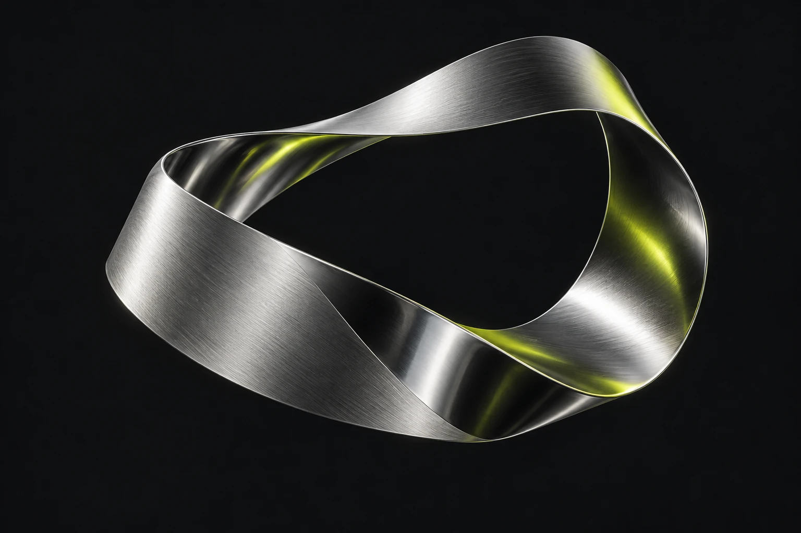

Osservazioni
Ogni nuovo stato parte da ciò che entra nel sistema.
Software developer / Independent builder
Costruisco software per dare struttura alle idee e continuità al lavoro. Il mio laboratorio si chiama Atlas.

01 / Progetto in primo piano
In evoluzioneUn progetto software che parte dalle osservazioni e conserva il percorso. Dati, memoria e passaggi di lavoro diventano una storia che si può riprendere.
Dentro il progettoIl filo, in pratica
Si parte da un’osservazione e da un riferimento che permette di ritrovarla.
Dimostrazione locale dell’architettura: nessuna chiamata a un modello IA.
Ogni nuovo stato parte da ciò che entra nel sistema.
Il contesto ha un riferimento e un punto da cui ripartire.
Ogni passaggio resta collegato al percorso che l’ha generato.
02 / Il mio approccio
Mi interessa il punto in cui un’idea diventa qualcosa che si può usare, osservare e migliorare.
Partire da una domanda precisa e dalle informazioni disponibili.
Definire responsabilità chiare e collegamenti semplici tra le parti.
Controllare il risultato, conservare il contesto e scegliere il prossimo passo.
03 / Dietro il progetto
Sviluppo software. Mi piace capire come le cose si collegano.
Ho una formazione in informatica e lavoro con Java, Angular e PostgreSQL. Con Atlas esploro il rapporto tra osservazione, memoria e strumenti di intelligenza artificiale.
Cerco chiarezza nelle interfacce e nelle strutture che le fanno funzionare. Una buona idea prende forma nei dettagli, un passaggio alla volta.
Segui quello che costruisco